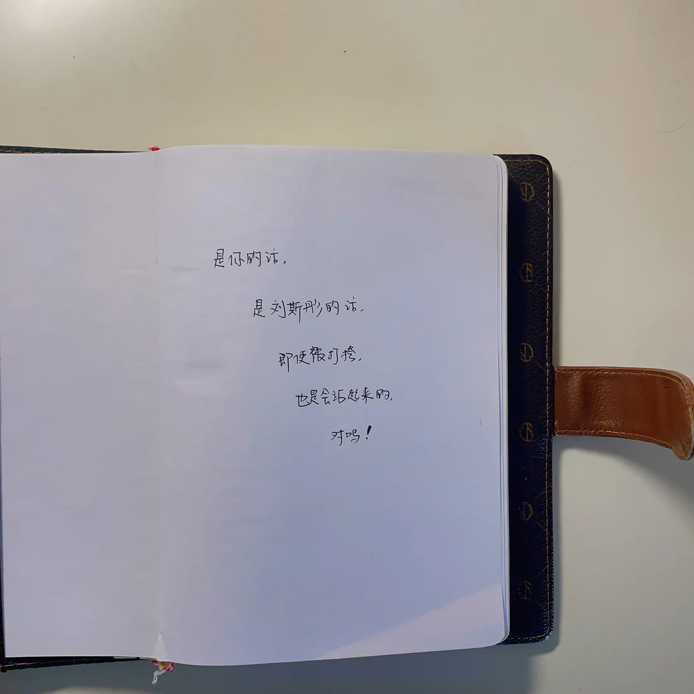
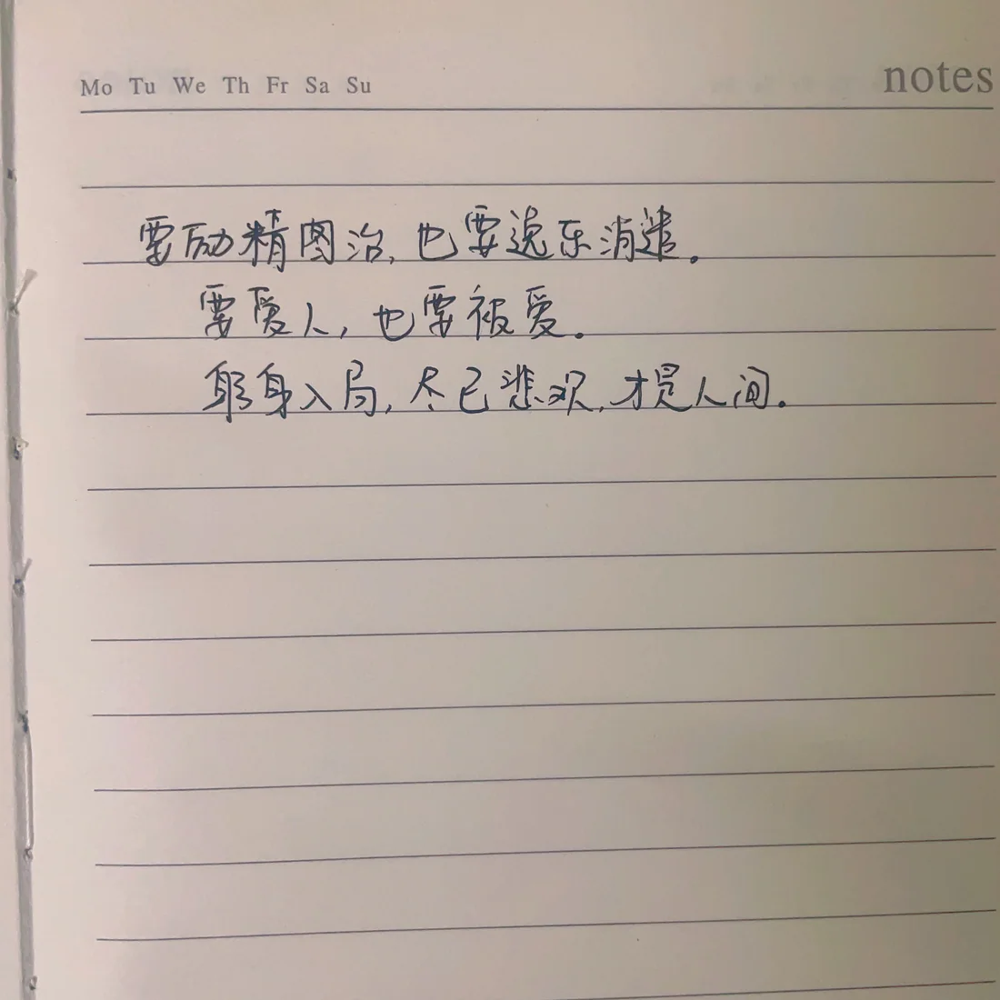
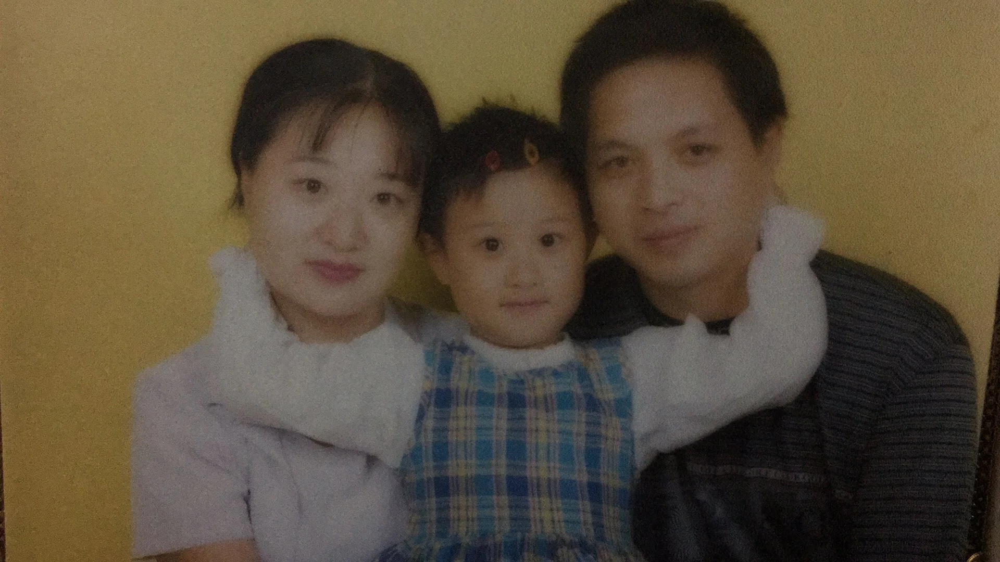
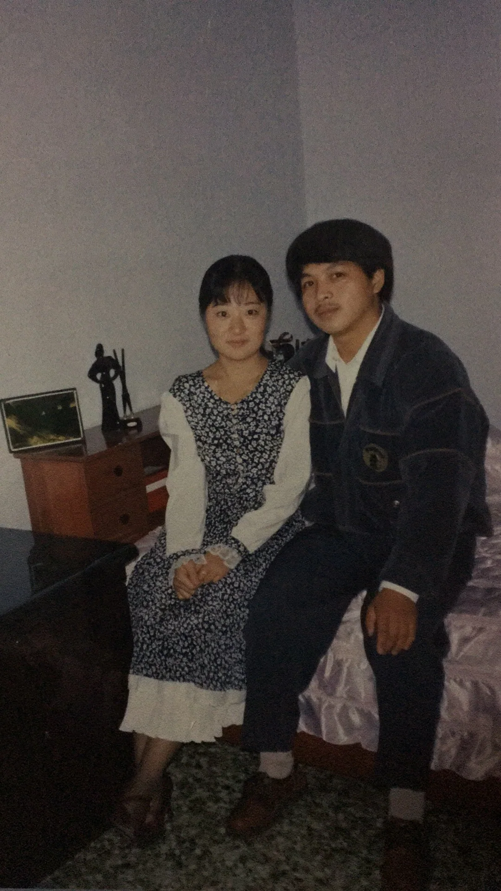
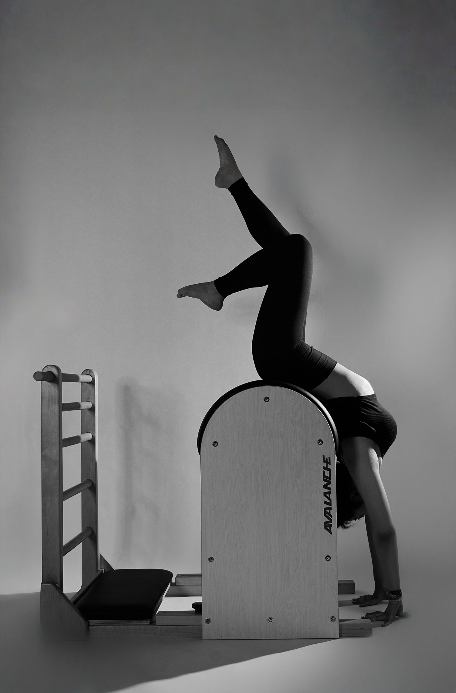
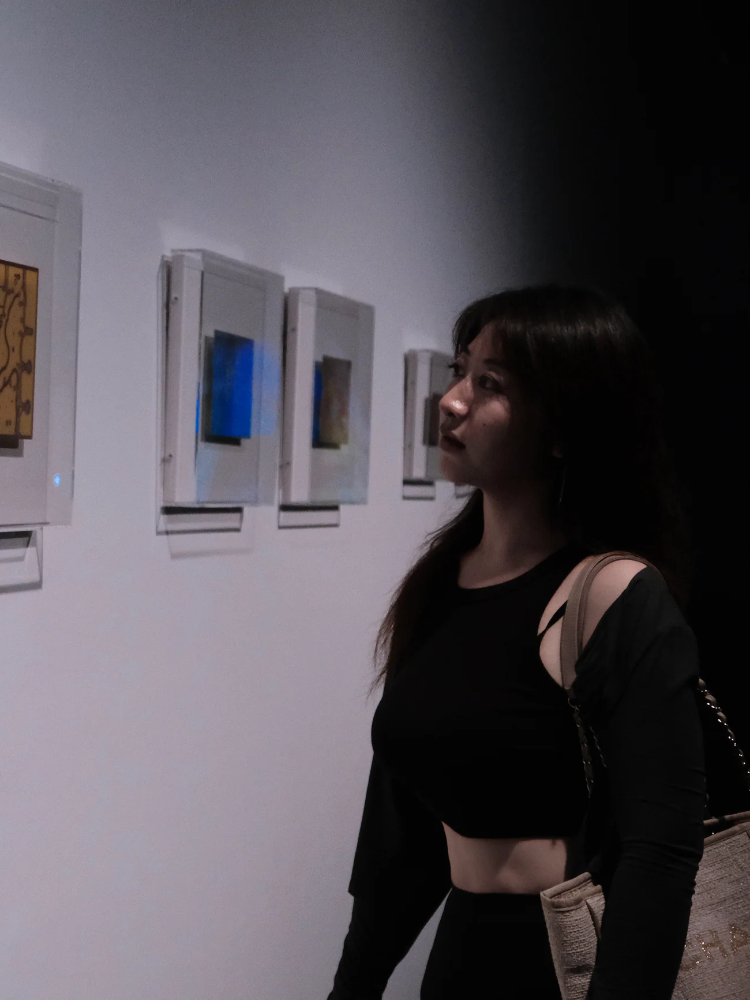
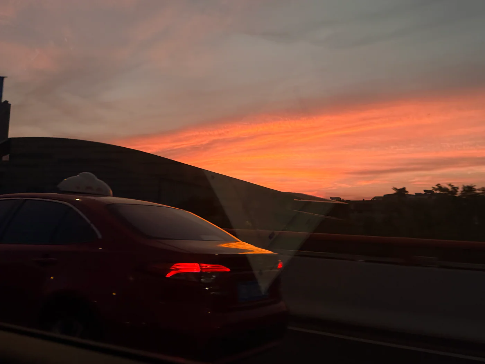
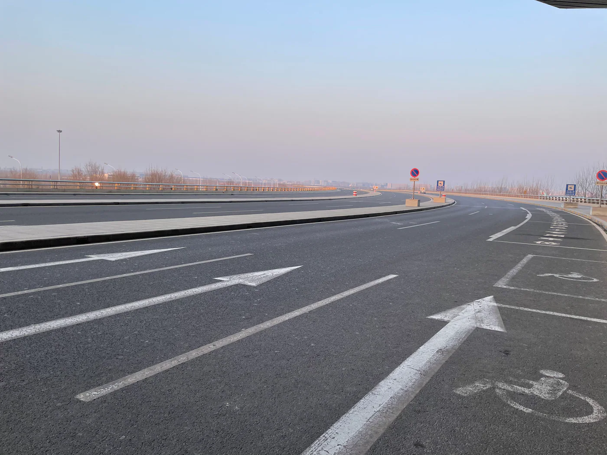

02 / THINGS WORTH KEEPING
THINGS
WORTH KEEPING
有些东西到了我这里，
我觉得很好，所以不想让它断掉。
高中。几个人。一张试卷大小的纸。
当时只是觉得好玩。
SCROLL ↓
ARCHIVE 002 / ONGOING
日记从 2009 年，
写到现在。
还有高中时朋友之间传过的小纸条。



DIARY FRAGMENTS
2009 → NOW
3 SCANS / CURRENT SELECTION
ARCHIVE 003 / FAMILY ALBUM
家里留下来的照片


家里的照片。
一直留到了现在。

KEEPING / 03
普拉提。
有用。舒服。
希望四十岁还在做。
ARCHIVE 005 / PASSED THROUGH
什么都不做。
看看周围的人和事儿。



PASSING ON